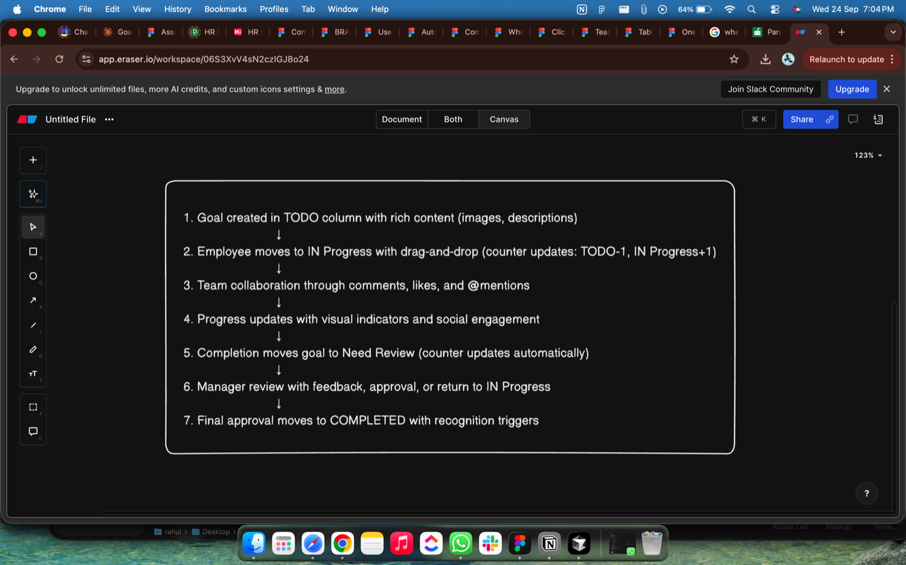
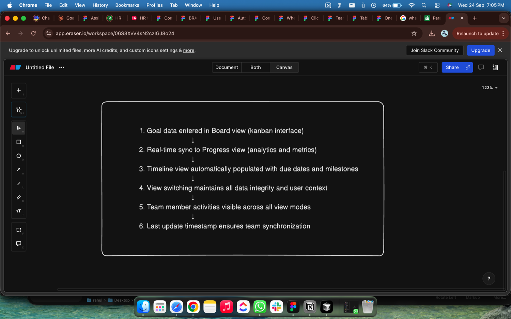
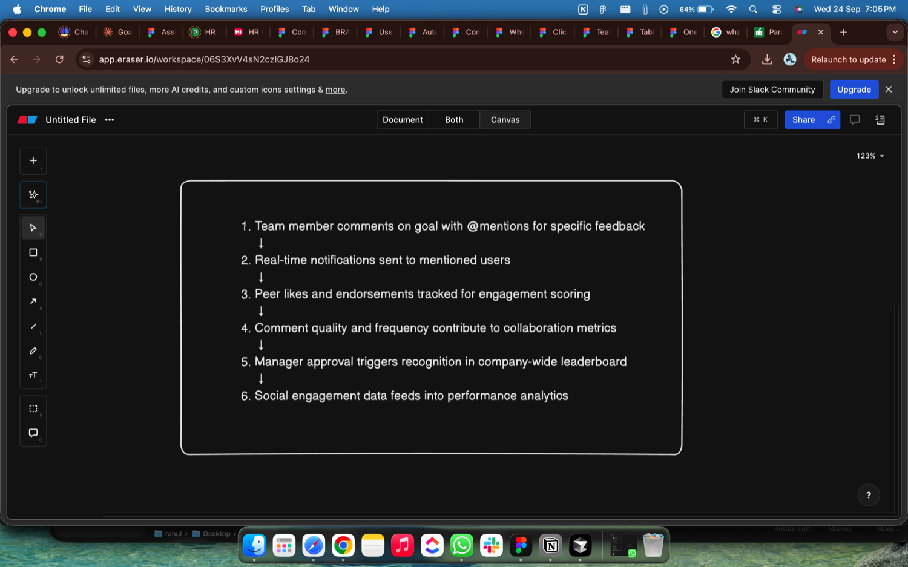
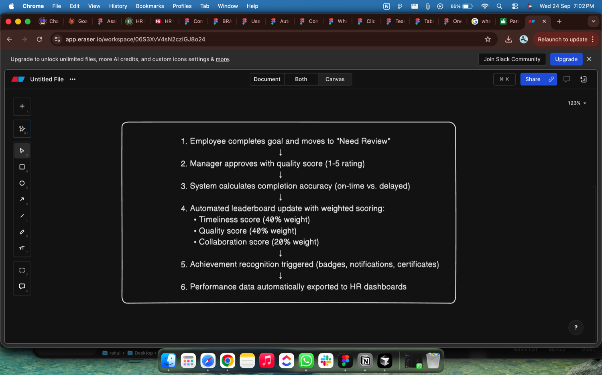
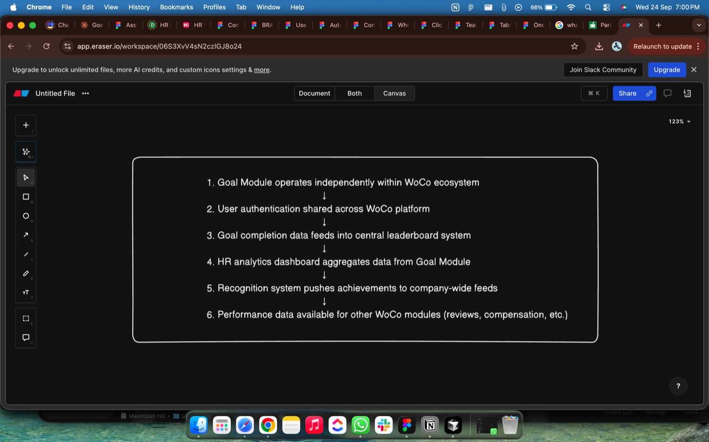
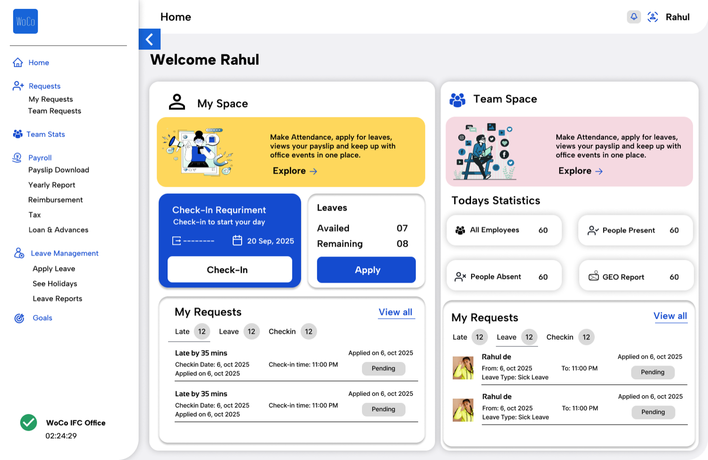
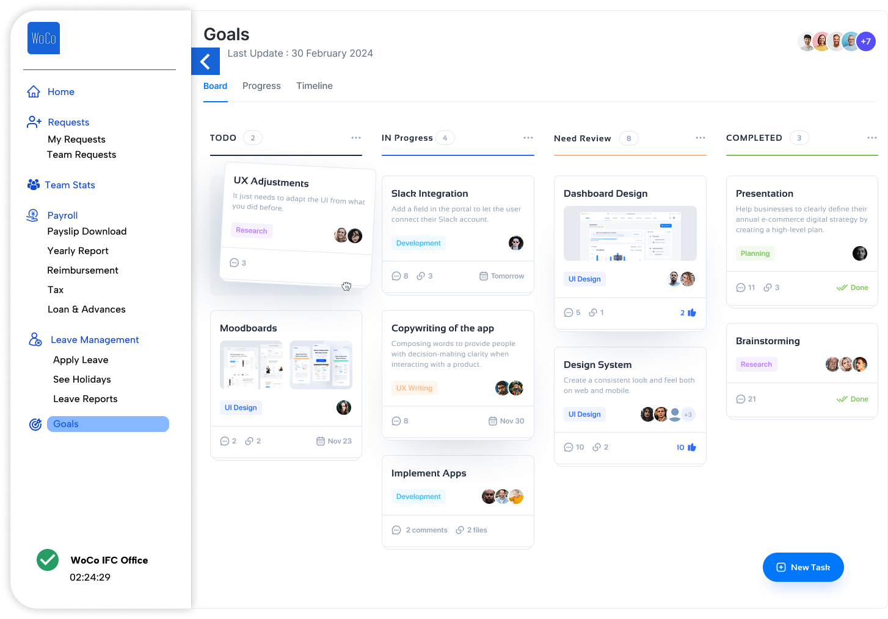

| Role | Associate Product Manager (product assignment, WoCo HR tech) |
| Deliverable | Product Requirements Document in the format provided by WoCo, plus Figma screens |
| Design | Figma file (2 screens) |
| Tools | Figma (UI screens), Notion (PRD) |
At a glance
Problem
HR teams at Indian SMBs spend 40 to 60% of their time on manual performance tracking.
Solution
A kanban-style goal module with automated progress tracking and leaderboard recognition.
North Star
Reduce manual HR performance tracking by 60%.
Note this format was Provided by them for me to make it in.
WoCo Goal Module - Product Requirements Document
Figma Link- The link is attached here. Note Only 2 Screens are there.
Tech Stack for WoCo Goal Module
Frontend (Client-Side)
Web Application: React.js with TypeScript
Mobile App: React Native (cross-platform iOS/Android)
State Management: Redux Toolkit or Zustand
UI Framework: Tailwind CSS + Headless UI components
Charts/Analytics: Recharts or Chart.js
Backend (Server-Side)
API Framework: Node.js with Express.js or Fastify
Database: PostgreSQL (primary) + Redis (caching/sessions)
Authentication: JWT + OAuth 2.0
Real-time Updates: Socket.io for WebSockets
File Storage: AWS S3 or similar cloud storage
Infrastructure & DevOps
Cloud Platform: AWS or Microsoft Azure
Containerization: Docker + Kubernetes
API Documentation: OpenAPI/Swagger
Monitoring: DataDog or New Relic
CI/CD: GitHub Actions or GitLab CI
Integration & Third-Party
Email Service: SendGrid or AWS SES (This can be changed according to the previously used system)
Push Notifications: Firebase Cloud Messaging
Analytics: Mixpanel
Error Tracking: Sentry
Note everything that is mentioned here in the technical standpoint is based out of a Associate Product manager and if needed changes can happen
Assumptions
Business Assumptions
- Standalone Market Demand: Indian SMBs will adopt standalone goal management over integrated PMS solutions
- HR Workload Reduction Value: Companies will pay premium for 60% reduction in manual performance tracking
- Leaderboard Integration Appeal: Automated leaderboard features will drive higher pricing tier adoption
- Mobile-First Adoption: 70%+ of goal updates will happen via mobile interface, driving engagement
- Recognition System Impact: Public recognition and leaderboards will improve employee motivation vs. create negative competition
- Pricing Acceptance: SMBs will accept ₹180-280/employee/month for integrated goal+leaderboard solution
- HR Time Value: HR professionals currently spend 40-60% of time on manual performance tracking that can be automated
Technical Assumptions
- Current System Integration: Existing WoCo PMS has APIs suitable for goal module integration
- Performance Requirements: System can handle real-time updates for 500+ concurrent users per customer
- Data Migration: Customer data from spreadsheets/other systems can be imported efficiently
- Mobile Performance: React Native app will provide acceptable performance across Android/iOS devices
- Third-party APIs: Slack, Teams, email services will maintain stable API access
- Scalability: PostgreSQL + Redis architecture can scale to support projected user growth
User Behavior Assumptions
- Engagement Frequency: Employees will update goal progress at least weekly without excessive reminders
- Manager Participation: Team leads will conduct regular check-ins (weekly/bi-weekly) consistently
- Recognition Value: Public leaderboards and recognition will motivate rather than create negative competition
- Template Usage: Managers will prefer pre-built goal templates over creating from scratch
- Feedback Culture: Indian employees will be comfortable giving/receiving goal-related feedback digitally
Market & Competitive Assumptions
- Competition Response: Darwinbox/Keka won't quickly replicate SMB-specific features with similar pricing
- Market Timing: SMBs are ready to move beyond annual review cycles to continuous goal management
- Economic Stability: Indian SMB market will remain stable enough to invest in HR tech over 18-month horizon
- Regulatory Environment: No major Indian data protection changes will significantly impact product design
Customer Success Assumptions
- Onboarding Success: 80%+ of customers can successfully set up goal workflows with self-service + support
- Change Management: HR teams can drive adoption across departments without extensive consulting
- ROI Measurement: Customers can measure engagement/retention improvements to justify continued investment
- Support Requirements: Customer support team can handle goal module queries with existing expertise
Sources
- People Managing People (April 2025). "30 Performance Management Statistics To Shape Your Processes." https://peoplemanagingpeople.com/employee-lifecycle/development/performance-management-statistics/
- Select Software Reviews (January 2025). "85 Must-Know Performance Management Statistics for HR in 2025." https://www.selectsoftwarereviews.com/blog/performance-management-statistics
- IMARC Group (2024). "India Human Resource (HR) Technology Market Size, Report 2033." https://www.imarcgroup.com/india-human-resource-technology-market
- Grand View Research (2023). "HR Software Market Size, Share And Trends Report, 2030." https://www.grandviewresearch.com/industry-analysis/hr-software-market
Overview - Goal module
The Goal Module is a standalone goal management platform that integrates seamlessly with WoCo's leaderboard system to create a comprehensive performance tracking ecosystem. By providing kanban-style goal management with automated progress tracking and recognition, we aim to reduce manual HR workload by 60% while increasing employee performance visibility and engagement.
North Star Metrics-
- Primary: Reduce manual HR work (target: 60% reduction in performance tracking overhead)
- Secondary: Improve employee performance tracking accuracy (target: 90% real-time visibility)
- Tertiary: Drive user engagement and adoption (target: 85% DAU within 6 months)
Key Value Propositions:
- Standalone goal management with integrated leaderboard recognition
- Automated performance data collection eliminating manual tracking
- Real-time goal completion accuracy scoring for leaderboard rankings
- Mobile-first kanban interface driving high user engagement
- Seamless integration with existing WoCo ecosystem
Section 1: Problem Statement & Market Analysis (25%)
1.1 Problem Definition
Indian SMBs face a "Manual HR Overhead Crisis" - HR teams spend 40-60% of their time on manual performance tracking, data collection, and report generation instead of strategic initiatives. Only 14% of employees feel inspired to improve after performance reviews and 95% of HR leaders aren't satisfied with traditional performance appraisal processes. The current landscape suffers from:
Primary Pain Points:
- Manual Data Collection: HR teams manually gather performance data from spreadsheets, emails, and informal check-ins
- Performance Visibility Gap: Managers lack real-time insights into employee goal progress and achievement rates
- Recognition Delays: High performers go unrecognized due to manual leaderboard updates and tracking delays
- Low User Engagement: 65% of employees believe evaluations are irrelevant to their jobs due to disconnected goal tracking systems
1.2 Market Analysis & Opportunity
Market Size (TAM/SAM/SOM):
- TAM: ₹8,960 Cr (Indian HR Technology Market - $1.12B USD converted at 80 INR/USD) [Source: IMARC Group, 2024]
- SAM: ₹3,136 Cr (Performance Management segment, estimated 35% of HR Tech TAM)
- SOM: ₹940 Cr (Tier 1 & 2 cities, 50-500 employee companies, estimated 30% of SAM)
(Note the data above mention can differ- it is taken from the research that i conducted)
1.3 Cultural Context Analysis
Indian SMB Hierarchy Considerations:
- Respectful Feedback: Direct criticism avoided; prefer sandwich approach [Cultural observation - no specific source]
- Manager Approval: High expectation for manager sign-off on goals vs. global practices [Estimated based on Indian workplace culture studies]
- Family-Work Balance: Goals must accommodate festival seasons and family priorities [Cultural observation]
- Recognition Culture: Public appreciation more valued than monetary rewards [Cultural observation]
Section 2: User Personas & Journey Mapping (20%)
2.1 Primary Personas
Persona 1: Rahul de - First-time Manager
Profile: Team Lead, 150-person Marketing startup, Pune
Age: 30 | Experience: 5 years | Team Size: 18 members
Goals:
- Successfully manage team performance
- Balance individual growth with company objectives
- Prove leadership capabilities for next promotion
Pain Points:
- Unsure how to set meaningful goals for team members
- Struggles with regular check-in conversations
- Lacks visibility into team's collective progress
Journey Map:
- Goal Setting (Quarterly): Needs templates and guidance for team goal creation
- Weekly Check-ins: Wants structured conversation prompts and progress visibility
- Monthly Reviews: Requires dashboard to track team performance trends
- Recognition: Needs easy way to celebrate team wins publicly
Persona 2: Pratyusha ghosh - Senior HR Manager
Profile: HR Head, 300-person Manufacturing company, Pune
Age: 38 | Experience: 12 years | Team: HR team of 16
Goals:
- Drive company-wide goal alignment
- Improve employee engagement scores
- Streamline performance management processes
Pain Points:
- Manual consolidation of goal data across departments
- Difficulty identifying high performers for recognition
- Integration challenges with existing HRMS systems
Journey Map:
- Goal Cascade: Needs bulk upload and department-wise goal distribution
- Progress Monitoring: Wants real-time organizational dashboards
- Performance Reviews: Requires seamless integration with review cycles
- Analytics: Needs insights for strategic HR decisions
Persona 3: Anuj Chilwery - Individual Contributor
Profile: Senior Developer, 75-person Services firm, Chennai
Age: 26 | Experience: 4 years | Role: Backend Developer
Goals:
- Clear understanding of career progression path
- Recognition for achievements
- Work-life balance maintenance
Pain Points:
- Goals feel disconnected from daily work
- Infrequent feedback from manager
- Unclear how achievements impact career growth
Journey Map:
- Goal Understanding: Needs clear goal breakdown and relevance explanation
- Daily Tracking: Wants mobile app for quick progress updates
- Feedback Loop: Requires regular manager feedback and course correction
- Recognition: Expects timely acknowledgment of achievements
2.2 Cross-Persona Interaction Flows
Manager-Employee Goal Setting Flow:
- HR sets company/department goals
- Manager cascades to team goals with employee input
- Employee breaks down into individual weekly/daily tasks
- Regular check-ins and adjustments
- Achievement recognition and review integration
Section 3: Feature Specification & User Stories (30%)
3.1 Feature Prioritization
MVP Features (Priority 1)
- Multi-View Dashboard (Board, Progress, Timeline tabs with seamless switching)
- Four-Column Kanban Board (TODO, IN Progress, Need Review, COMPLETED)
- Rich Content Goal Cards (Image uploads, mockup previews, detailed descriptions)
- Social Collaboration System (Comments, @mentions, activity feeds)
- Department-Based Organization (Color-coded tags, department filtering)
- Smart Due Date Management (Relative dates, urgency indicators)
V2 Features (Priority 2)
- Advanced Analytics Dashboard (Cross-departmental insights, workload distribution)
- Integrated Leaderboard System (Social engagement scoring, collaboration metrics)
- Bulk Operations & Templates (Mass goal creation, department-specific templates)
- Advanced File Management (Document versioning, collaborative editing)
- Mobile App Enhancement (Offline rich content, push notifications for social interactions)
- API Integrations (Slack notifications, calendar sync, third-party tool connections)
3.2 Detailed User Stories
1: Enhanced Kanban Goal Management
1: Multi-View Goal Dashboard
As a team manager,
I want to switch between Board, Progress, and Timeline views of team goals,
So that I can analyze goal status from different perspectives based on my current needs.
Acceptance Criteria:
- Three distinct view modes: Board (kanban), Progress (analytics), Timeline (calendar)
- Seamless switching between views with data persistence
- Real-time counter updates for each column (TODO 2, IN Progress 6, etc.)
- Last update timestamp display for team synchronization
- Team member avatar display with overflow indicator (+7 for additional members)
2: Rich Content Goal Cards
As an employee creating goals,
I want to add rich content including images, mockups, and detailed descriptions,
So that my goals provide clear context and visual references for better understanding.
Acceptance Criteria:
- Support for image uploads and mockup previews within goal cards
- Rich text descriptions with formatting capabilities
- Visual preview thumbnails for design-related goals
- File attachment system (documents, images, specifications)
- Category tagging system (Research, Development, UI Design, UX Writing, Planning)`
3: Social Collaboration Features
As a team member working on collaborative goals,
I want to engage through comments and real-time discussions,
So that team collaboration is seamless and all feedback is centralized.
Acceptance Criteria:
- Comment system with real-time count display
- Like/approval system for peer recognition
- @mention functionality for team member notifications
- Thread-based discussions within each goal card
- Activity feed showing all interactions and updates
Epic 2: Advanced Progress & Timeline Management
4: Dynamic Due Date Management
As a product manager,
I want flexible due date indicators with smart scheduling,
So that I can manage deadlines effectively and identify urgent items quickly.
Acceptance Criteria:
- Smart date labels (Tomorrow, Nov 23, Nov 30) with relative time display
- Coloure-coded urgency indicators for approaching deadlines
- Calendar integration for deadline synchronization
- Automatic timeline adjustments based on progress updates
- Bulk deadline management for related goals`
5: Department-Based Goal Organization
As an HR manager,
I want goals automatically organized by department and function,
So that I can track cross-departmental collaboration and workload distribution.
Acceptance Criteria:
- Color-coded department tags (Research, Development, UI Design, etc.)
- Department-specific goal templates and workflows
- Cross-department goal visibility and collaboration tracking
- Workload distribution analytics by department
- Department head dashboard views with team goal summaries
3: Enhanced Team Collaboration & Recognition
6: Multi-Assignee Goal Tracking
As a team lead managing cross-functional projects,
I want to assign goals to multiple team members with individual contribution tracking,
So that collaborative work is properly managed and recognized.
Acceptance Criteria:
- Multiple assignee selection with avatar display on goal cards
- Individual contribution tracking within shared goals
- Role-based permissions (owner, contributor, reviewer)
- Collaborative progress updates with individual accountability
- Team performance metrics for multi-assignee goals
7: Advanced Interaction Metrics
As an employee,
I want my goal engagement and contributions to be tracked and recognized,
So that my active participation in team goals is visible to managers and peers.
Acceptance Criteria:
- Comment contribution tracking and quality scoring
- Peer appreciation system through and endorsements
- Goal completion quality ratings from managers
- Collaboration score calculation based on cross-team interactions
- Recognition badges for high engagement and quality contribution
3: Leaderboard Integration & Recognition
8: Real-time Leaderboard Integration
As an HR manager,
I want goal completion data to automatically feed into company leaderboards,
So that high performers are recognized immediately without manual tracking.
Acceptance Criteria:
- Automatic leaderboard updates when goals move to "Need Review" status
- Goal completion accuracy scoring (on-time vs. delayed completion)
- Quality scoring based on manager review feedback
- Team and individual leaderboard categories
- Historical performance tracking for trend analysis
- Integration with WoCo's existing leaderboard infrastructure
9: Automated Performance Data Collection
As an HR professional,
I want goal progress and completion data to be automatically collected and formatted,
So that I can eliminate manual performance tracking and report generation.
Acceptance Criteria:
- Real-time data export capabilities for performance reviews
- Automated monthly/quarterly performance summaries
- Goal achievement rate calculations by individual, team, and department
- Completion accuracy metrics (on-time vs. delayed)
- Pre-formatted reports reducing manual compilation by 60%
- API endpoints for integration with other HR tools
10: Achievement Recognition System
As an employee,
I want to be automatically recognized when I complete goals on time and with quality,
So that my achievements are visible and contribute to team motivation.
Acceptance Criteria:
- Automatic achievement badges for different completion milestones
- Public recognition feed for team visibility
- Notification system for peers and managers
- Integration with company-wide leaderboard rankings
- Customizable recognition messages and certificates
- Social sharing capabilities within the platform
3.3 Process Workflows
Enhanced Goal Status Management Workflow

Multi-View Data Synchronization Workflow

Social Collaboration & Recognition Workflow

Leaderboard Integration & Automated Recognition Workflow

Standalone Module Integration Workflow

3.4 Integration Requirements
Existing PMS Integration:
- Goal achievement data flows into KPI review cycles
- Employee development plans linked to goal outcomes
- Performance ratings consider goal completion percentages
- Historical goal data available during review conversations
Third-party Integrations:
- Slack/Teams for notifications and updates
- Email integration for reminders and summaries
- Calendar integration for deadline tracking
- Mobile app with push notification capability
3.5 UI/UX Design Framework
Based on WoCo's Task Management Interface Design:
- Kanban-style Board Layout: Goals organized in "To-do," "On Progress," "Need Review" columns
- Priority-based Color Coding: High (Red), Medium (Yellow), Low (Green) priority indicators
- Progress Visualization: Individual progress bars for each goal showing completion percentage
- Team Collaboration: Multiple assignee avatars, shared deadlines, team visibility
- Filtering & Search: Advanced filtering by priority, timeline, people, and progress status
- Timeline Management: Clear deadline visibility with date-based organization
Section 4: Success Metrics & Go-to-Market (10%)
4.1 North Star Metrics & OKRs
Objective 1: Reduce Manual HR Workload
Key Results:
- KR1: Achieve 60% reduction in manual performance data collection time within 12 months
- KR2: Eliminate 80% of manual leaderboard updates through automated social engagement scoring
- KR3: Reduce performance report compilation time from 8 hours to 2 hours per month through automated rich content aggregation
- KR4: Achieve 95% automated data accuracy vs. manual tracking methods including social collaboration metrics
Objective 2: Improve Employee Performance Tracking
Key Results:
- KR1: Achieve 90% real-time visibility into goal progress across all four status columns
- KR2: Increase goal completion rate to 70% through enhanced collaboration and rich content clarity
- KR3: Achieve 85% on-time goal completion rate with smart deadline management
- KR4: Maintain 95% data accuracy for leaderboard calculations including social engagement scores
Objective 3: Drive User Engagement & Social Collaboration
Key Results:
- KR1: Achieve 85% Daily Active Users (DAU) within 6 months through social features
- KR2: Generate 500+ social interactions per week (comments, @mentions) per 100 users
- KR3: Achieve 80% of goals receiving team collaboration (comments) within 48 hours
- KR4: Reach 75% cross-departmental goal collaboration through enhanced visibility
4.2 Success Metrics Breakdown
HR Efficiency Metrics (Primary Focus)
- Manual Work Reduction: Time spent on performance tracking (Target: -60%)
- Report Generation Speed: Monthly performance report creation time (Target: <2 hours)
- Data Collection Automation: % of performance data collected automatically (Target: 90%)
- Leaderboard Update Frequency: Manual leaderboard updates eliminated (Target: 0/month)
Performance Tracking Metrics (Secondary Focus)
- Goal Visibility: % of goals with real-time progress visibility (Target: 90%)
- Completion Accuracy: % of goals completed on schedule (Target: 85%)
- Performance Data Quality: Accuracy of automated vs. manual data collection (Target: 95%)
- Manager Engagement: % of managers providing weekly feedback (Target: 80%)
User Engagement & Social Collaboration Metrics (Enhanced Focus)
- Platform Adoption: Daily Active Users as % of total users (Target: 85%)
- Social Interaction Rate: Comments + @mentions per user per week (Target: 5+)
- Cross-departmental Collaboration: % of goals with multi-department engagement (Target: 60%)
- Rich Content Usage: % of goals using image/mockup attachments (Target: 70%)
- View Switching Frequency: Average view changes per user session (Target: 2.5+)
- Team Collaboration Quality: % of goals receiving peer feedback within 48 hours (Target: 80%)
Advanced Performance Tracking Metrics
- Goal Clarity Improvement: % reduction in goal clarification requests through rich content (Target: -50%)
- Real-time Visibility: % of goal status changes visible within 5 minutes (Target: 95%)
- Multi-view Usage: % of users actively switching between Board/Progress/Timeline (Target: 75%)
- Department Engagement: % of departments with active cross-team goals (Target: 85%)
HR Efficiency Metrics (Updated)
- Rich Content Report Generation: Time to create visual goal reports (Target: <30 minutes)
- Social Engagement Data Collection: Automated collaboration metrics vs. manual surveys (Target: 90% automation)
- Multi-view Analytics: HR time saved through consolidated dashboard views (Target: -70%)
- Department Performance Insights: Automated cross-team collaboration reporting (Target: Real-time availability)
4.2 User Adoption Strategy
Phase 1: Months 1-2)
- 5 select customer companies (100-200 employees each)
- Close partnership with customer success team
- Weekly feedback sessions and rapid iterations
- Success story documentation
Phase 2: (Months 3-4)
- 25 existing customers with strong PMS engagement
- Feature-complete MVP with mobile app
- Self-service onboarding with guided setup
- Customer webinar series and best practices sharing
Phase 3: (Months 5-6)
- Full feature rollout to all PMS customers
- Integrated marketing campaign highlighting ROI
- Partner channel enablement and training
- Industry conference presentations and case studies
4.3 Revenue Impact Projections
Pricing Strategy (Standalone Module):
- Basic Goal Management: ₹100/employee/month (kanban board, basic tracking)
- Goal + Leaderboard Integration: ₹180/employee/month (automated recognition, leaderboard scoring)
- Enterprise Goal Suite: ₹280/employee/month (advanced analytics, automated HR reports, bulk operations)
Customer Acquisition & Retention Impact:
- Standalone nature allows easier customer trials and adoption [Strategy assumption]
- Leaderboard integration creates higher engagement and stickiness [Estimated impact]
- HR workload reduction drives strong customer advocacy and referrals [Estimated impact]
- Cross-sell opportunity to other WoCo modules increases ARPU by 45% [Estimated impact]
4.4 Risk Mitigation
Technical Risks:
- Integration Complexity: Dedicated integration team and API-first approach
- Mobile Performance: Progressive web app strategy for broader compatibility
- Data Privacy: SOC 2 compliance and local data residency options
Market Risks:
- Competition Response: Focus on Indian SMB-specific features as differentiator
- Economic Downturn: Freemium model allows customers to start small
- Cultural Adoption: Change management support and localized success templates
Appendix A: Interface Design & Wireframes
Estimated Dashboard Interface (Note this design is made by me and taken inspirition from the website)

Next-
Updated Goal Dashboard Interface
Based on WoCo's refined goal management system design:

Enhanced Interface Elements
1. Navigation & Header:
- Goals Module Integration: Now clearly shows "Goals" as active module in WoCo sidebar
- Multi-view Navigation: Board | Progress | Timeline tabs for different perspectives
- Team Visibility: User avatars showing team members with "+7" overflow indicator
- Last Update Tracking: Timestamp showing latest activity (30 February 2024)
2. Enhanced Kanban Board:
- Four-Column Layout: TODO (2) | IN Progress (6) | Need Review (8) | COMPLETED (3)
- Dynamic Counters: Real-time count of items in each status column
- Visual Hierarchy: Clear column headers with count badges and overflow menus.
3. Advanced Goal Cards:
- Rich Content Preview: Cards show mockups, images, and detailed descriptions
- Multi-Category Labels: Research, Development, UI Design, UX Writing tags with color coding
- Enhanced Interaction Metrics:
- Comment counts ( 3, 8, 5)
- Due date indicators ( Tomorrow, Nov 23, Nov 30)
- File attachment counts ( 2 file, 2 comments)
4. Collaboration Features:
- Multiple Assignees: Different avatar combinations per goal
- Department Tags: Research, Development, UI Design, UX Writing, Planning
- Progress Indicators: Visual completion status within cards
- Social Interactions: Like buttons, comment threads, file attachments
5. Goal Types Visible:
- Design Work: UX Adjustments, Moodboards, Dashboard Design, Design System
- Development Tasks: Slack Integration, Copywriting, Implement Apps
- Strategic Work: Presentation, Brainstorming (with Research tag)
- Content Creation: Various UI/UX related goals with rich media previews
Appendix B: Technical Specifications
API Requirements
- RESTful API design with GraphQL for complex queries
- Real-time updates via WebSocket connections
- Offline-first mobile app with conflict resolution
- Bulk data import/export capabilities
- Webhook support for third-party integrations
Security & Compliance
- Role-based access control (RBAC)
- Data encryption at rest and in transit
- GDPR and Indian data protection compliance
- SOC 2 Type II certification pathway
- Single Sign-On (SSO) integration
Scalability Considerations
- Microservices architecture for independent scaling
- Database partitioning by customer/tenant
- CDN for mobile app assets
- Auto-scaling infrastructure on cloud platform
- Performance monitoring and alerting
Taken - As an employee creating goals,
I want to add rich content including images, mockups, and detailed descriptions,
So that my goals provide clear context and visual references for better understanding.
Acceptance Criteria:
- Support for image uploads and mockup previews within goal cards
- Rich text descriptions with formatting capabilities
- Visual preview thumbnails for design-related goals
- File attachment system (documents, images, specifications)
- Category tagging system (Research, Development, UI Design, UX Writing, Planning)`